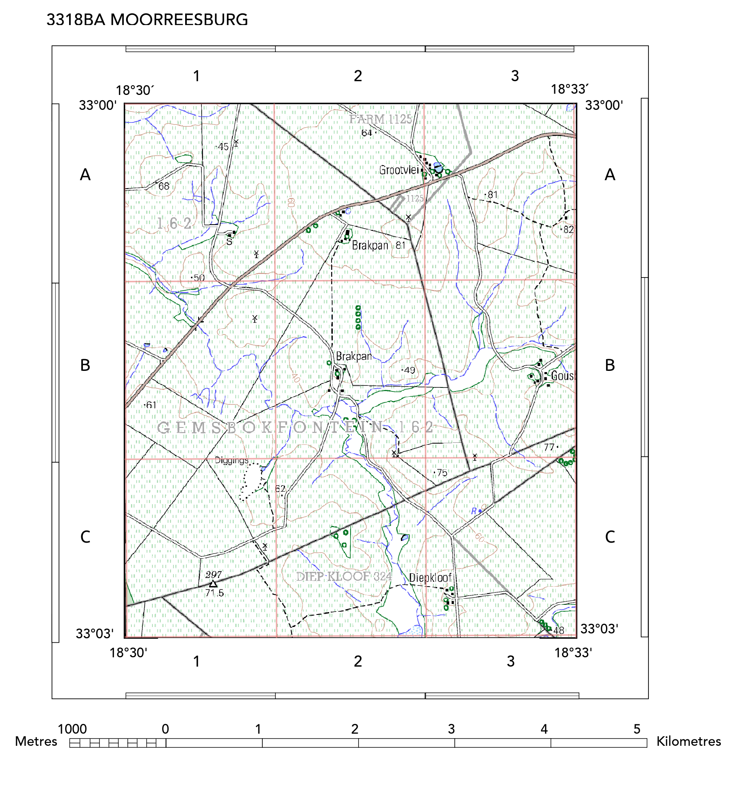

In geography, we use topographic maps to help us ‘see’ what an area looks like and to understand processes that occur in that area. The scale of all South African topographic maps is 1 : 50 000. This scale is large enough to show natural features (rivers, hills, forests) and constructed features (roads, buildings, dams) in some detail. Almost all places in South Africa are represented on a topographic map. Each topographic map covers an area of approximately 640 km² and there are a total of 1 913 South African topographic maps. Each of these maps has a unique four-digit, two-letter map reference number that appears on the top of the topographic map sheet, for example Moorreesburg 3318BA.
